01 / PROBE
Measure candidate routes
Use short, task-balanced K/V probes to characterize candidate layers.
World-action model security
PASA-KV studies how visual perturbations travel through action-facing key and value routes in world-action models, and how a small probing budget can identify routes that change downstream actions.
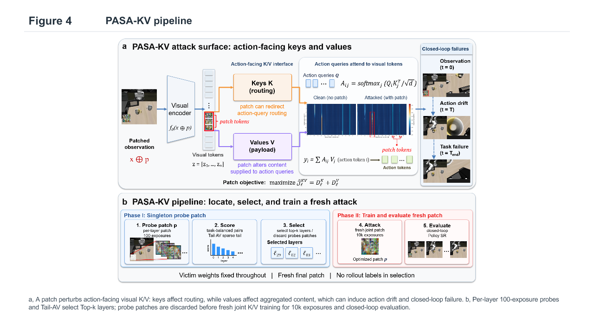
The question
World-action models connect visual observations, internal representations, and robot actions through different inference graphs. PASA-KV studies the action-facing K/V interfaces within those graphs, while keeping candidate-layer selection separate from online task success.
Use short, task-balanced K/V probes to characterize candidate layers.
Score clean and patched outputs with the Tail-AV selector on a disjoint calibration set.
Optimize a new universal RGB patch on selected routes, then evaluate it on a separate policy grid.
Method
The reference code separates K/V displacement, action-response scoring, ranking, patch training, and evaluation-grid integrity. Adapters supply model-specific tensors and visual-token indices while preserving the shared method interface.
Rollout outcomes do not enter route selection. Each final top-k patch starts from a fresh initialization rather than reusing the short probe patches.
Project visuals
These figures were copied from the local figure archive. SVG vectors are included where available; Figure 4 is a PNG rendering of the pipeline diagram. Review captions, result status, and consistency with the latest paper before public release.
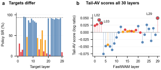
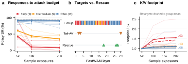
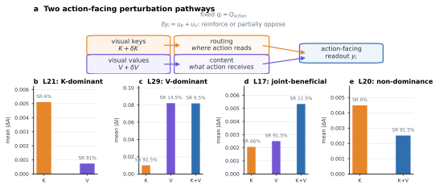
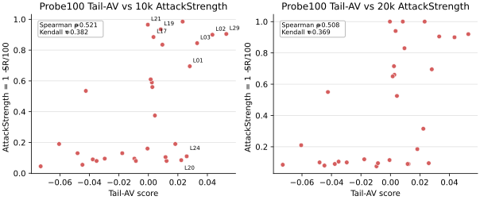
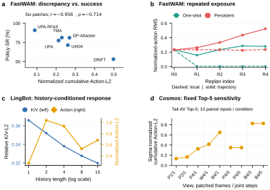
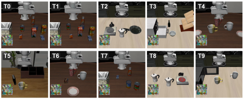
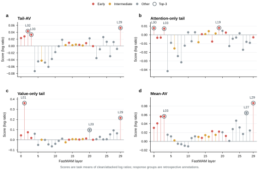
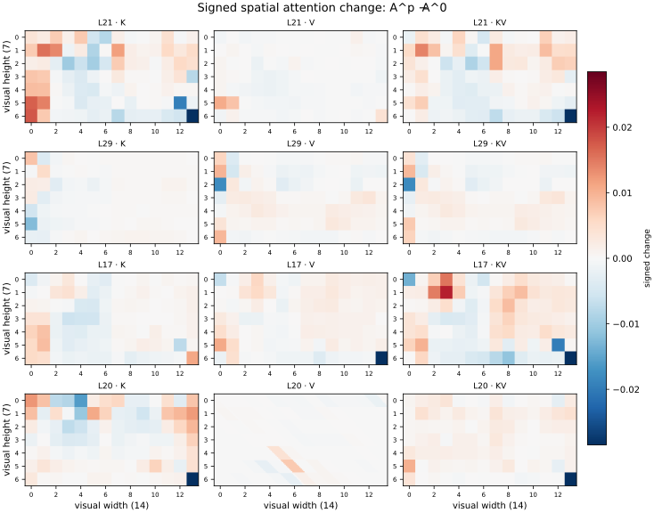
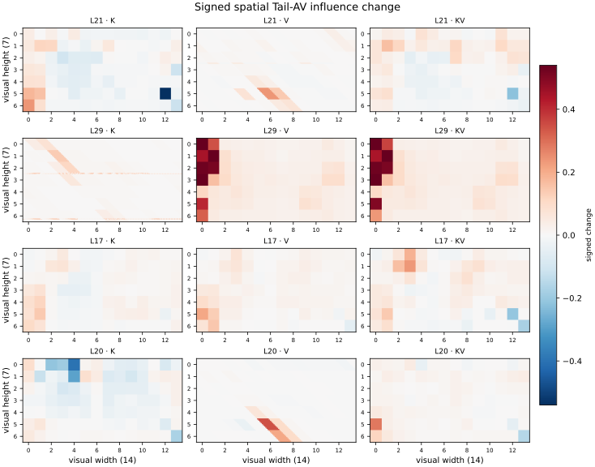
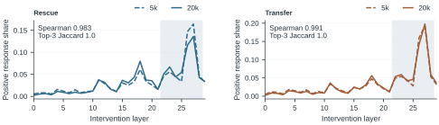
Code
Explore the method core, adapter contract, training pipeline, evaluation helpers, configurations, and CPU method tests in the code directory.
cd code/PASAKV
python -m pip install -e ".[test]"Paper
Add the verified current manuscript, arXiv link, and citation once the latest source package is restored and checked.
License: not assigned yet. Select a license and review upstream compatibility before publishing.